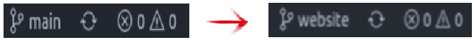
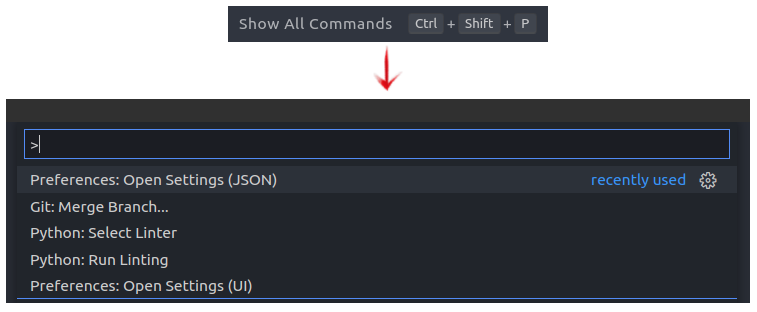
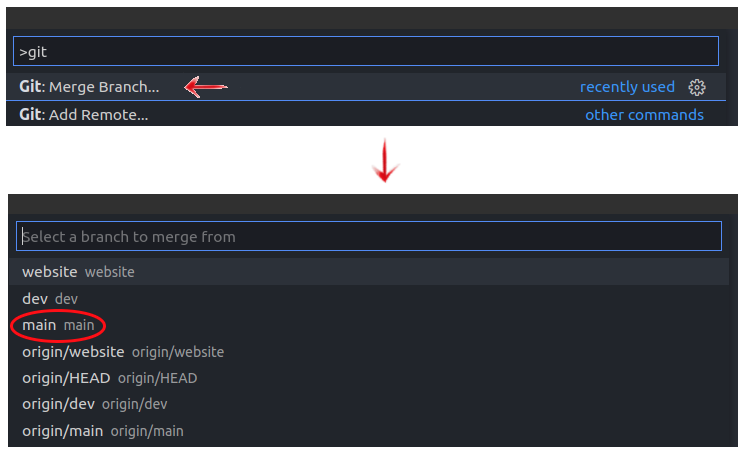
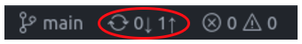
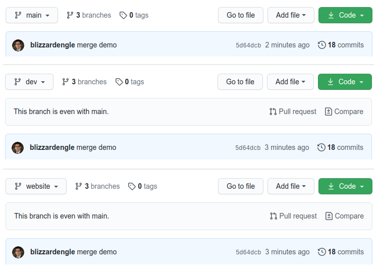

Git Merge
If you recall from the Git Ready assignment back in Week 8, the term merge refers to taking one branch and combining (merging) its code and history into another branch. To prepare ourselves to start publishing your website online using GitHub Pages we need to get comfortable performing merges. Throughout the rest of the semester you will be asked at specific times to merge one branch into another to facilitate grading. You are welcome to merge branches as often as you like but remember that your main branch should be updated less frequently than your dev branch.
Stop:
You must have completed the branches assignment before starting this assignment! Remember all your work must be done in the dev branch of your repository unless you are explicitly told otherwise.
Assignment:
-
Merge with the Command Line
Merging branches is a relatively straight forward process to do via the command line (terminal). VS Code and many other code editors offer ways to merge branches with the GUI (graphical user interface), but the steps are often cumbersome in contrast to the command line. For this step please start in your
devbranch; this is the branch you should be working in most of the time so you should already be there. Make sure you have saved, committed, and pushed any outstanding changes to yourdevbranch before opening your command line and running the following code:# Change to the main branch git checkout main # Merge the dev branch into the main branch git merge dev # Push the changes to the main branch up git pushAssuming you encountered no errors, you have just successfully merged two branches. The
git checkout maincommand switched your active branch tomain(you should always switch to the branch you want to pull changes into), thegit merge devcommand performed the merge, and thengit pushpushed the changes up. Notice how you did not need to perform acommiton the merged branches? This is unnecessary because the merge is just merging already existing commit histories between the two branches, no new commit was made or needs to be created. -
Merge with the GUI
Merging two branches with the GUI requires a few more steps. What we will practice now is merging the
mainbranch into thewebsitebranch using the GUI. Keep in mind that this merge will only work if you have not previously merged a branch into yourwebsitebranch. If you fell behind in class or did not do the branch assignment correctly your website branch may already contain everything from yourmainbranch.Starting on your
mainbranch (where we left off in the last step), switch into yourwebsitebranch. You can do this by clicking on the branch name in the lower left corner and then selectingwebsitefor the drop down menu that appears.Next you will need to open the command palette. You can do this by clicking on
Viewin the menu and selectingCommand Paletteor by using the keyboard shortcut Ctrl + Shift + P; this shortcut may be different depending on your operating system.Next you will need to type git into the command palette box and select the Git: Merge Branch option. This will open another drop down menu with all of your branches. Select the
 mainbranch as the branch you want to merge from. This will start the merging process, pulling in all the changes frommaininto thewebsitebranch.Now all that is left for you to do is to push the changes. Remember that there is no need to perform a commit when you do a merge since a merge simply combines histories from the two branches. Pictured here is what a queued push looks like in VS Code's GUI. Note that this image is showing the
mainbranch and not the website branch you should be in right now. -
Check
Now that you have successfully merged several branches using the command line and the GUI, lets go see what it looks like on GitHub. Navigate to your repository on GitHub and switch between the 3 branches. You will notice that they are all the same now. Each branches latest commit message is also the same since we merged everything from the same history. Here is what it looks like when I completed this demo:
 -
Complete
To prove you have successfully merged all your branches you will need to take a screenshot of the
devandwebsitebranches like demonstrated in step 3 above. It might help if you shrink your browser window so the page is not so wide. Please grab only the portion of the screen you need and paste the two screen captures into a document. Do not submit two images but a single document with two images inserted into it.Grading
Submit your screenshots by inserting them into a document and submitting the document to Canvas. Acceptable submission formats are
doc,docx,odt, orpdf. Do not upload the images individually or you will receive a 0 for failing to follow instructions.